Personal Brand & LinkedIn Strategist
I write the words
other people
get known for.
I help founders and executives turn their expertise into a LinkedIn presence people actually notice- and remember.
§01- About
Hi, I'm Smrati, a LinkedIn ghostwriter and personal branding strategist.
I help founders and executives build a presence that attracts opportunities through story-led content.
No AI-flat posts. No posting just to post.
I come from a marketing and MBA background, and today I write LinkedIn content for founders and C-suite executives- turning their expertise into words people actually stop and read.
I'm endlessly curious about human psychology and what makes people pay attention. That's the lens everything I write comes from.
If your expertise deserves more visibility than your LinkedIn currently gives it, let's talk.
§02- Services
What I do
-
01 LinkedIn Ghostwriting & Strategy
Content built on real strategy- designed to build authority and stay true to your voice.
-
02 Executive Personal Branding
Positioning founders and leaders as credible, recognizable authorities in their space.
-
03 Profile Optimization
A complete rebuild of your LinkedIn profile, positioned to attract the right audience and opportunities.
-
04 Email Campaign Writing
Sequences designed to nurture and convert, built and tracked through platforms like Mautic.
-
05 Cold Outreach Messaging
Personalized outbound messaging engineered to start real conversations.
-
06 Video Scripts (Reels / Shorts)
Scripts built around attention and retention, for Instagram Reels and YouTube Shorts.
-
07 Landing Page & Ad Copy
Copy that translates your product's value into language your audience actually acts on.
-
08 Speaking / Career Mentorship Sessions
Delivering LinkedIn strategy and personal branding sessions for students, professionals, and career changers.
§03- Executive Content
CEO LinkedIn
Strategy, writing, and content management for the CEO's LinkedIn presence.
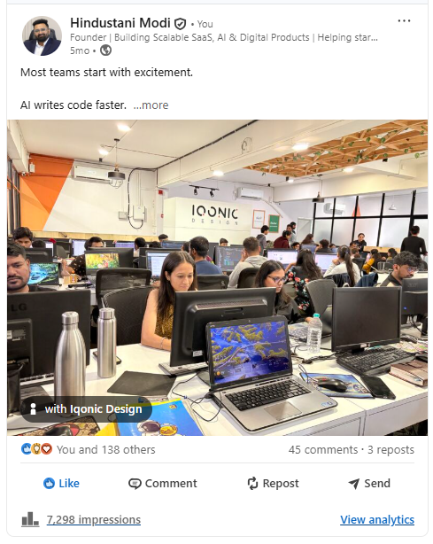
"AI Writes Code Faster"
A reflection on how teams start with excitement, but speed alone doesn't build lasting products.
7,298 impressions · 138 reactions · 45 comments · 3 reposts
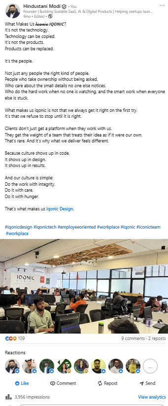
"What Makes Us Iqonic"
A culture-first narrative arguing that technology and products can be copied, but people and integrity can't.
3,956 impressions · 109 reactions · 9 comments · 2 reposts
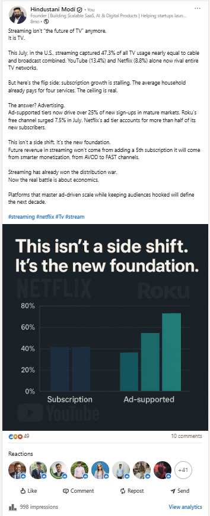
"Streaming Isn't the Future of TV- It's TV"
A data-backed industry analysis on streaming's shift from subscription growth to ad-supported models.
998 impressions · 49 reactions · 10 comments
§04- Profile Rebuild
Before / After
Repositioned the CEO's headline to lead with his title and value proposition, alongside a banner refresh with a clear CTA ("Book a Consultation").
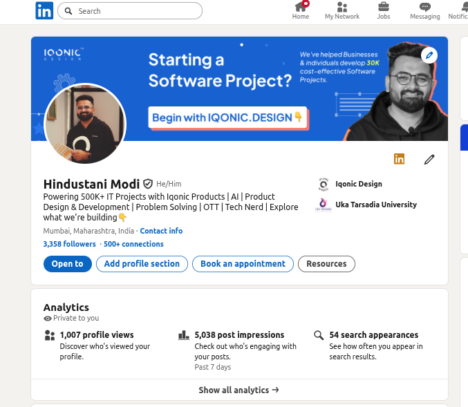
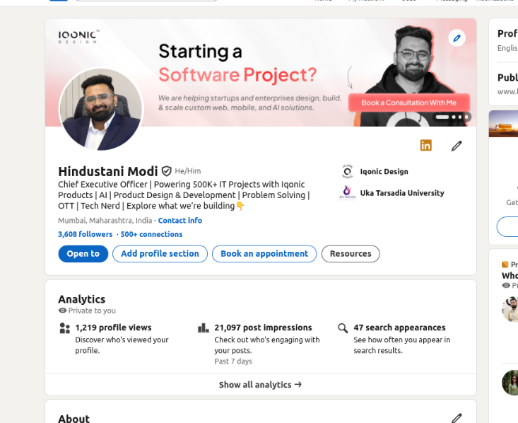
Drag to compare
| Metric | Before | After | |
|---|---|---|---|
| Headline | No title mentioned | "Chief Executive Officer" | |
| Followers | 0 | 0 | |
| Post Impressions (7-day) | 0 | 0 | |
| Profile Views (7-day) | 0 | 0 | |
| Search Appearances (7-day) | 0 | 0 |
§05- Brand Pages
Company & product pages
I manage content strategy and writing across the following LinkedIn company pages- click through to see live posts.
Content strategy, writing, and brand positioning across 6 LinkedIn company pages.
§06- Event Campaign
GITEX Global 2025, Dubai
Ran a content and outreach campaign around the CEO's attendance at GITEX Global 2025- combining pre-event announcement posts, live event coverage, and personalized outreach to attendees, resulting in secured meetings on the ground.
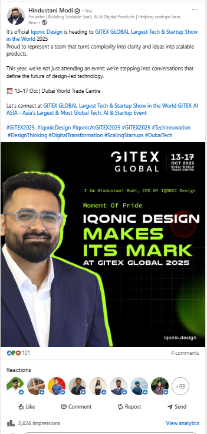
Pre-Event Announcement
Announced Iqonic Design's participation at GITEX Global 2025, positioning the company's presence around ideas and conversations, not just booth attendance.
2,424 impressions · 101 reactions · 4 comments
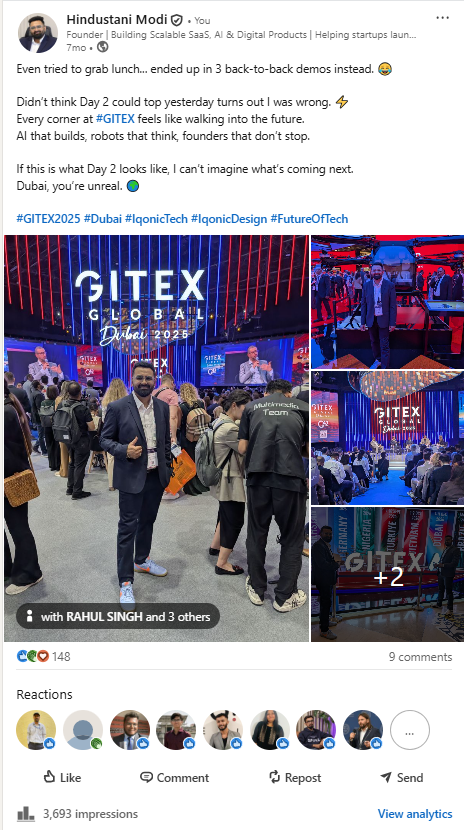
Day 2 Recap
Real-time recap capturing the energy and pace of the event floor, reinforcing brand visibility during the live event window.
3,693 impressions · 148 reactions · 9 comments
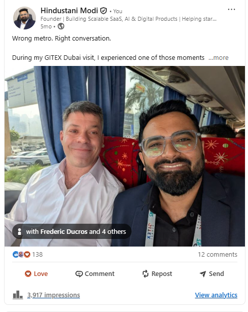
"Wrong Metro, Right Conversation"
A personal, story-led moment from the event- an unexpected connection made during travel, humanizing the brand's presence at a global tech event.
3,917 impressions · 138 reactions · 12 comments
Alongside content, ran personalized outreach to GITEX attendees ahead of the event, resulting in secured on-ground meetings.
§07- Case Studies
Full-funnel work
Context
Streamit needed a stronger, more credible brand presence to compete in the OTT / streaming platform space- spanning its website, content, and outbound relationships with potential clients.
What I did
- Rebuilt the landing page content strategy, repositioning it in a high-enterprise product tone
- Created and wrote the lead magnet, plus built contact form landing pages using Lovable
- Wrote video scripts for Instagram Reels and YouTube Shorts, focused on individual Streamit features- generated using HeyGen and Higgsfield
- Set up and optimized Streamit's YouTube channel
- Managed LinkedIn content strategy and posting for the brand
- Wrote and sequenced email campaigns, deployed through Mautic
- Ran personalized outreach to OTT platform owners, including custom audit reports
Result
"If I ever build anything else, I'm calling them first."
A founder testimonial captured on video, unprompted- a direct reflection of the trust built through this outreach and brand work.
3,965 impressions · 108 reactions · 36 comments · 8 reposts on the testimonial post
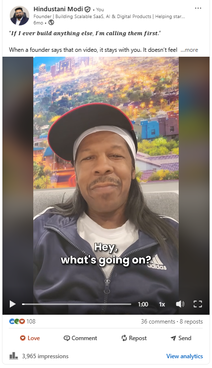
Context
KiviCare needed to expand into the dental clinic niche, targeting dentists in India and overseas to show how the platform could make their practice more patient-focused and digitally accessible.
What I did
- Built a dedicated lead magnet and landing page for the dentist niche, created using Lovable
- Wrote outreach messaging specifically for dentists, both in India and overseas
- Ran outreach across two channels- Instagram and Email- with emails set up and tracked through Mautic
- Led a team of 4 people executing this outreach over a 2–3 month campaign
- Simultaneously created outreach messaging for a second team working on a different niche
- Tracked and analyzed outreach performance, delivering regular reporting
Result
Ran a sustained, two-channel outreach campaign over 2–3 months, led a 4-person team executing it, and supported a second team's outreach for a separate niche in parallel- with ongoing performance tracking and reporting throughout.
Context
Iqonic Agency was introduced as a new offering by the company, needing both a credible content presence and an active outbound lead generation engine to start bringing in clients.
What I did
- Built the content strategy for Iqonic Agency's case study pages
- Ran outbound lead generation primarily through LinkedIn, using Apollo and Sales Navigator data across 3 separate LinkedIn accounts
- Continuously tested and evolved outreach messaging to improve reply rates, rather than running a single static script
Result
Built and maintained a multi-account outbound lead generation system for a newly launched agency offering, with an iterative approach to message testing aimed at improving response rates over time.
§08- Leading & Teaching
Beyond the writing
Team Leadership
Alongside my own content and outreach work, I mentored a marketing trainee and led a team of 4 people during the KiviCare dentist outreach campaign.
- Mentored a marketing trainee through LinkedIn content writing, profile optimization, and outreach fundamentals
- Led a team of 4 people executing the KiviCare dentist outreach campaign across Instagram and email
- Created outreach messaging and direction for a second team working on a separate niche in parallel
The trainee I mentored successfully transitioned into a full-time employee.
Mentoring & Speaking- Ek Pehel
Since December 2025, I've run LinkedIn career guidance sessions at Ek Pehel Institute for students, job seekers, interns, and career re-starters- and spoken at a semi-government school on AI awareness for 9th and 11th standard students. For each session, I built the presentation content myself.
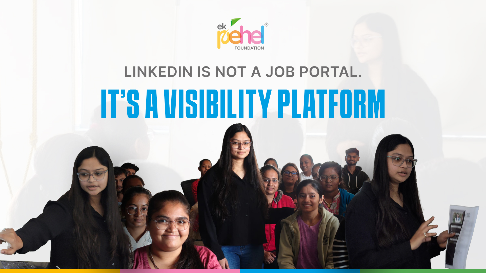
01LinkedIn Career Guidance Session
Ek Pehel · 1st session
Focused on visibility over credentials- skills alone don't get noticed; a clear profile, purposeful networking, and showing up consistently does.
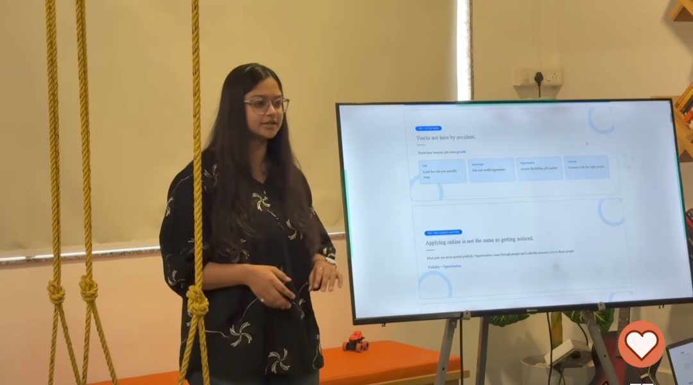
02LinkedIn Career Growth Session
Ek Pehel · 2nd session
Focused on visibility as a skill- introducing students, including 11th standard attendees, to LinkedIn early, before they enter the job/opportunity race.
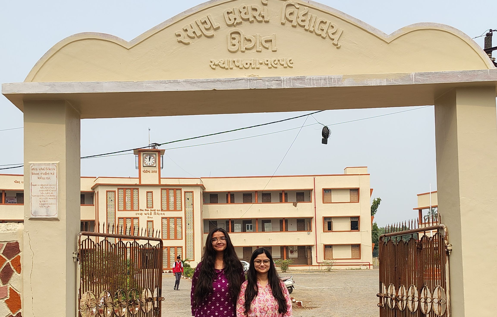
03AI Awareness Session
Semi-Government School
Delivered to 9th and 11th standard students, covering how to use AI smartly and responsibly for their studies and future opportunities.
Delivered 3 sessions to date, each with self-built presentation content, reaching students across different educational stages.
§09- Testimonials
In their words
"Smrati is an exceptional content writer with the ability to think beyond AI-generated content. She has a strong understanding of content strategy and consistently delivers well-researched, thoughtful, and engaging content across a wide range of topics. Before writing, she takes the time to study each subject in depth, develops a thorough understanding of the domain, and captures the perspective of a subject matter expert."
Karan Barad Brand & Visual Strategist, Iqonic Agency
"Smrati, being the best in business as soon as she joined us. She is an expert in LinkedIn and also the amount of questions she would ask before taking up the work shows how sorted her workflows are."
Hindustani Modi Founder & CEO, Iqonic Design
"Working with Smrati has been a genuinely positive experience. She's calm, disciplined, and someone who approaches her work with a lot of sincerity. While managing my LinkedIn profile, she took the time to understand my perspective, communication style, and audience, which made the content feel natural and authentic."
Rahul Singh Chief of Growth Strategist
"She brings smart strategic thinking along with excellent execution skills. Her marketing approach is practical, creative, and results-driven."
Bhoomin Naik Chief Product Officer
§10- Toolkit
Tools I use
§11- Contact
Let's build something people actually notice.
If your expertise deserves more visibility than your current presence gives it, let's talk.
Let's talk